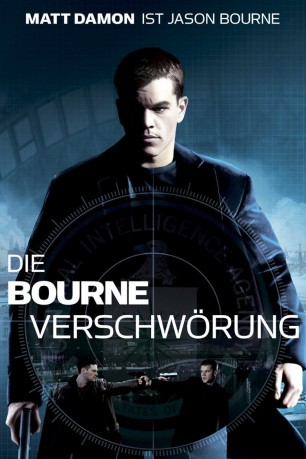

gesehen am 24.07.2015
gesehen am 24.07.2015Alternativ: The Bourne Supremacy gesehen am 24.07.2015
 
 IMDB-Wertung: 7.8 / 10
IMDB-Wertung: 7.8 / 10  Metascore:
Metascore: 
Jason Bourne und seine Lebensgefährtin Marie leben zurückgezogen in Indien, doch der immer noch unter Amnesie leidende Jason wird jede Nacht von Alpträumen gequält. Als in Berlin zwei Agenten getötet werden, schiebt man ihm die Schuld in die Schuhe. Wieder setzt die CIA Agenten auf Bourne an und er und Marie müssen flüchten. Doch als die CIA-Killer Marie töten dreht Jason den Spieß um...
Jahr: 2004
Dauer: 108 Minuten
FSK: 12
Land: USA Studio: Universal PicturesTonspuren: DTS - ,
Untertitel:
Auflösung: 1080p (1920x816) Größe: 9216 MB
Regisseur: Paul Greengrass
Drehbuch: Robert Ludlum, Tony Gilroy
Soundtrack: John Powell
Darsteller:
 Matt Damon als Jason Bourne
Matt Damon als Jason Bourne Franka Potente als Marie
Franka Potente als Marie Brian Cox als Ward Abbott
Brian Cox als Ward Abbott Julia Stiles als Nicky
Julia Stiles als Nicky Karl Urban als Kirill
Karl Urban als Kirill Gabriel Mann als Danny Zorn
Gabriel Mann als Danny Zorn Joan Allen als Pamela Landy
Joan Allen als Pamela Landy Marton Csokas als Jarda
Marton Csokas als Jarda Tom Gallop als Tom Cronin
Tom Gallop als Tom Cronin John Bedford Lloyd als Teddy
John Bedford Lloyd als Teddy Michelle Monaghan als Kim
Michelle Monaghan als Kim Karel Roden als Gretkov
Karel Roden als Gretkov Tomas Arana als Martin Marshall
Tomas Arana als Martin Marshall Tim Griffin als John Nevins
Tim Griffin als John Nevins Ivan Shvedoff als Moscow Policeman
Ivan Shvedoff als Moscow Policeman Chris Cooper als Conklin , uncredited
Chris Cooper als Conklin , uncreditedDatei: X:\5-Pentalogie(A-Z)\Bourne\Bourne 2 - Verschwörung, Die (2004, FSK12, 1920x816).mkv seit 13.07.2015
Festplatte: HD Collection-3(N-Z)-6(A-Z)
 Es gibt insgesamt 8 Filme in der Gruppe '5-Pentalogie(A-Z)\Bourne'
Es gibt insgesamt 8 Filme in der Gruppe '5-Pentalogie(A-Z)\Bourne'